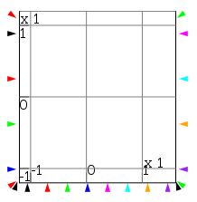
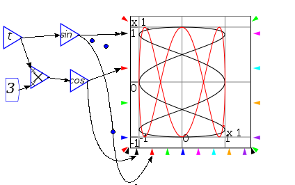

Next: Note Widget Up: Reference Previous: Groups
A plot widget embeds a dynamic plot into the canvas. Around the outside of the plot are a number of input ports that can be wired.


If only one bottom port is connected, then that controls all pens simultaneously, and if no ports are connected, then the simulation time is used to provide the x coordinates

Russell Standish 2016-11-03